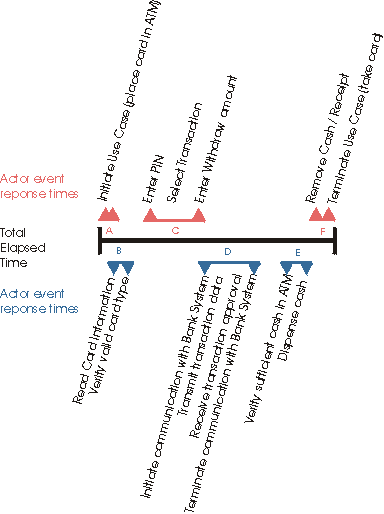

Обзор
Качество программного обеспечения оценивается по различным параметрам, среди которых надежность, функциональность и
производительность (см. Концепция:
Параметры качества). Модель анализа нагрузки (см. Рабочий продукт: Модель анализа нагрузки) создается для идентификации
и определения различных переменных, которые влияют на производительность приложения или системы, и показателей,
необходимых для оценки производительности. Профили нагрузки, из которых состоит модель, представляют возможные условия,
которые должны имитироваться для объектов тестирования в одной или нескольких конфигураций среды тестирования. Модель
анализа нагрузки используется следующими ролями:
-
специалист по анализу тестов (см. Роль:
Специалист по анализу тестов) применяет модель анализа нагрузки для определения плана тестирования и тестовых
сценариев для различных тестов
-
проектировщик тестов (см. Роль:
Проектировщик тестов) использует модель анализа нагрузки для определения подходящего метода тестирования и
требований пригодности к тестированию для различных тестов
-
специалист по тестированию (см. Роль: Специалист
по тестированию) использует модель анализа нагрузки, чтобы лучше понять цели теста для реализации, выполнения и
анализа выполнения.
-
представитель пользователей (см. Роль:
Заинтересованное лицо) использует модель анализа нагрузки для оценки уместности нагрузки и тестов, которые
требуются для эффективного оценивания поведения системы в данной модели анализа нагрузки
В модель анализа нагрузки включается информация о характеристиках и атрибутах в следующих основных областях:
-
Сценарии вариантов использования (или экземпляры, см. Рабочий
продукт: Вариант использования), которые должны выполняться и оцениваться во время тестирования
-
Субъекты (см. Рабочий продукт: Субъект), имитируемые или эмулируемые при
тестировании
-
Профиль нагрузки, представляющий число и тип существующих одновременно экземпляров субъектов, сценариев вариантов
использования, выполняемых этими экземплярами субъектов, и интерактивными ответами или быстродействием, связанными
с каждым из этих сценариев.
-
Конфигурация среды тестирования (фактическая, имитируемая или эмулируемая), применяемая при выполнении и оценке
тестов (см. Рабочий продукт: Конфигурация среды тестирования. См. также Рабочий продукт: Документ архитектуры программного обеспечения,
представление Развертывание, на основе которого должна создаваться Конфигурация среды тестирования)
Необходимо рассмотреть тесты для измерения и оценки характеристик и поведения тестируемой системы, работающей с разной
нагрузкой. Для успешного проектирования, реализации и выполнения этих тестов для этих профилей нагрузки необходимо
определить как реалистические, так и особые данные.
Для того чтобы выбрать сценарий для данного типа тестирования, необходимо рассмотреть два аспекта вариантов
использования:
Не все сценарии вариантов использования, реализуемые в тестируемой системе, могут потребоваться для этих тестов.
Критические варианты использования содержат те сценарии вариантов использования, которые будут в центре внимания при
тестировании, то есть будут измеряться и оцениваться именно их характеристики.
Для определения критических вариантов использования найдите те сценарии вариантов использования, которые отвечают
одному или нескольким из следующих критериев:
-
требуют измерения и оценки на основе профиля нагрузки
-
часто выполняются одним или несколькими конечными пользователями (экземплярами субъекта)
-
для которых высока доля (в процентах) использования системы
-
расходуют значительные ресурсы системы
Составьте список сканеров критических вариантов использования для включения в тест. После того как сканеры
идентифицированы, необходимо проанализировать поток событий варианта использования. Начните определять конкретную
последовательность событий между субъектом (типом) и системой во время выполнения сценария варианта использования.
Дополнительно установите (или проверьте) следующую информацию:
-
Входные условия для вариантов использования, такие как состояние данных (какие данные должны / не должны
существовать) и состояние тестируемой системы
-
Данные, которые могут быть постоянными (одинаковыми) или должны быть разными для разных сценариев варианта
использования
-
Отношение между данным вариантом использования и другими вариантами использования, такие как последовательность, в
которой должны выполняться эти варианты использования
-
Частота выполнения сценария варианта использования, в том числе такие характеристики, как число одновременно
существующих экземпляров варианта использования и доля полной нагрузки каждого сценария на систему.
В отличие от сценариев критических вариантов использования, которые представляют собой основную цель теста, сценарии
значимых вариантов использования - это те, которые могут влиять на характеристики производительности сценариев
критических вариантов использования. Сценарии значимых вариантов использования должны удовлетворять одному или
нескольким из следующих критериев:
-
они должны выполняться до или после выполнения критического варианта использования (зависимое входное или выходное
условие)
-
часто выполняются одним или несколькими экземплярами субъекта
-
для которых высока доля (в процентах) использования системы
-
требуют значительных ресурсов системы
-
будут регулярно выполняться в развернутой системе при выполнении сценариев критических вариантов использования,
таких как электронная почта или фоновая печать
По мере идентификации сценариев значимых вариантов использования и их включения в список, пересматривайте поток событий
варианта использования и дополнительную информацию, как это делалось выше для сценариев критических вариантов
использования.
Для успешного тестирования производительности необходимо идентифицировать не только субъекты, выполняющие сценарии
критических и значимых вариантов использования, но также имитировать или эмулировать поведение субъекта. Например, один
экземпляр субъекта может взаимодействовать с тестируемой системой иначе (дольше отвечать на запросы, вводить другие
данные и т.д.), чем при выполнении этого же сценария варианта использования другим экземпляром этого субъекта.
Рассмотрим показанные ниже простые варианты использования:

Субъекты и варианты использования банкомата.
Первый экземпляр субъекта "Клиент", выполняющий сценарий варианта использования, может быть опытным пользователем
банкомата, тогда как второй экземпляр субъекта "Клиент" - неопытным. Опытный клиент быстро перемещается по
пользовательскому интерфейсу банкомата и, не тратя много времени на чтение каждого приглашения, автоматически нажимает
кнопки. Неопытный клиент, наоборот, прочитывает каждое приглашение и затрачивает лишнее время на то, чтобы понять его,
перед тем как ввести ответ. Реалистические профили нагрузки отражают это различие и позволяют точно оценить поведение
тестируемой системы.
Начните с идентификации субъектов для каждого определенного выше сценария варианта использования. Затем определите
разные профайлы субъекта, который может выполнять каждый сценарий. В приведенном выше примере с банкоматом могут
существовать следующие стереотипы субъекта:
-
Опытный пользователь банкомата
-
Неопытный пользователь банкомата
-
Счет пользователя банкомата находится "внутри" банковской сети этого банкомата (счет пользователя - в банке,
которому принадлежит этот банкомат)
-
Счет пользователя банкомата находится вне банковской сети этого банкомата (в конкурирующем банке)
Для каждого профайла субъекта определите различные атрибуты и их значения:
-
Время обдумывания - время, которое требуется субъекту для ответа на отдельные запросы тестируемой системы
-
Скорость ввода - скорость, с которой субъект взаимодействует с интерфейсом
-
Темп запросов - скорость, с которой субъект создает запросы к тестируемой системе
-
Коэффициент повтора - число повторов варианта использования или запроса в последовательности
-
Метод взаимодействия - метод взаимодействия, применяемый субъектом, такой как использование клавиатуры для ввода
значений, переход к полю с помощью клавиши табуляции, использование ускоряющих клавиш и и.д. или использование мыши
для того чтобы "указать и выбрать", "вырезать и вставить" и т.д.
Дополнительно для каждого профайла субъекта идентифицируйте его профиль нагрузки, указав все сценарии вариантов
использования, которые он выполняет, и долю времени (в процентах) или долю трудозатрат субъекта, выполняющего эти
сценарии. Эта информация используется при идентификации и создании реалистической нагрузки (см. раздел Нагрузка и ее
атрибуты).
Необходимо идентифицировать некоторые атрибуты и переменные, которые уникально определяют конфигурацию среды
тестирования, так как они тоже влияют на измерение и оценивание поведения. К ним относятся:
-
Аппаратное обеспечение (быстродействие процессора, память, кэширование диска и т.д.)
-
Архитектура развертывания (число серверов, распределение обработки и т.д.)
-
Сетевые атрибуты
-
Другое программное обеспечение (и варианты использования), которое может устанавливаться в тестируемой системе и
эксплуатироваться параллельно
Идентифицируйте системные атрибуты и переменные и составьте их список для включения в тесты. В число источников, из
которых можно получить эту информацию, входят:
Как установлено ранее, нагрузка представляет собой важный фактор, влияющий на поведение тестируемой системы. Очень
важно точно определить профиль нагрузки, который будет применяться для оценки поведения системы. Обычно тест с учетом
нагрузки выполняется несколько раз с применением разных профилей нагрузки, каждый из которых представляет вариант
атрибутов, описанных ниже:
-
Число экземпляров субъекта, одновременно взаимодействующих с тестируемой системой
-
Профайл субъектов, взаимодействующих с тестируемой системой
-
Сценарии вариантов использования, выполняемые каждым экземпляром субъекта
-
Частота каждого сценария критического варианта использования и частота его повтора
Для каждого профиля нагрузки, применяемого для оценки производительности тестируемой системы, определите значения всех
указанных выше переменных. Значения, используемые для каждой переменной при различной нагрузке, можно получить путем
наблюдения, или путем опроса субъектов, или из бизнес-модели вариантов использования, если она доступна. В общем случае
необходимо определить один или несколько следующих профилей нагрузки:
-
Оптимальный - профиль нагрузки, который отражает наилучшие возможные условия развертывания, такие как минимальное
число взаимодействующих с системой экземпляров субъектов, выполнение сценариев только критических вариантов
использования, выполнение минимального числа дополнительных программ и минимальная дополнительная нагрузка во время
тестирования.
-
Средний (Обычный) - профиль нагрузки, который отражает ожидаемые или фактические типовые (усредненные) условия
использования.
-
Кратковременный пиковый - профиль нагрузки, который отражает предполагаемые или фактические условия
кратковременного интенсивного использования, которые действуют в течение коротких периодов во время нормальной
работы.
-
Пиковый - профиль нагрузки, который отражает предполагаемые или фактические условия интенсивного использования,
такие как максимальное число экземпляров субъектов, выполнение больших объемов сценариев вариантов использования,
выполнение большого числа дополнительных программ и большая дополнительная нагрузка во время тестирования.
Если тестирование нагрузки включает Тестирование при пиковой нагрузке (см. Концепция:
Тестирование производительности и Прием: Типы
тестов), то необходимо определить несколько дополнительных видов нагрузки, каждый из которых будет относиться к
определенному аспекту системы в необычных или непредвиденных состояниях, которые сильно отличаются от ожидаемой
нормальной нагрузки развернутой системы.
Для того чтобы тестирование было успешным, необходимо измерять результаты теста и оценивать параметры нагрузки. При
определении параметров нагрузки и критериев необходимо рассмотреть следующие факторы:
-
Какие требуются измерения?
-
Где находятся и каковы критические точки измерений в тестируемой системе или при выполнении варианта использования
-
Каковы критерии, которые должны применяться для определения допустимых характеристик производительности?
Критерии качества работы
Во время выполнения теста можно произвести множество измерений. Определите наиболее значимые измерения и обоснуйте их
значимость.
Ниже перечислены более общие характеристики производительности, которые отслеживаются или записываются:
-
Состояние или статус тестового сценария - графическое изображение текущего состояния, статуса или хода выполнения
теста
-
Время ответа / Быстродействие - измерение (вычисление) времен ответа или быстродействия (обычно определяется как
число транзакций в секунду).
-
Трассировка - запись сообщений / диалога между субъектом (тестовым сценарием) и тестируемой
системой или потока данных и/или потока процесса во время выполнения.
ЗА дополнительной информацией обратитесь к разделу Прием:
Ключевые показатели тестирования
Критические точки измерения производительности
Выше в разделе Варианты использования и их атрибуты отмечалось, что для тестирования производительности выполняются не
все варианты использования и их сценарии. Аналогично, для каждого выполняемого сценария варианта использования
измеряются не все показатели производительности. Обычно для измерений выбираются только отдельные сценарии вариантов
использования; либо это может быть вообще определенная последовательность событий в сценарии конкретного варианта
использования, которая будет измеряться для оценки характеристик производительности. При измерении параметров
производительности будьте осторожны при выборе наиболее значимых начальных и конечных "точек". Наиболее значимые точки
- это те, где лучше всего видны последовательности событий, или те, на которые мы можем влиять напрямую посредством
изменений в программном или аппаратном обеспечении.
Например, в определенном выше варианте использования Банкомат - Снять деньги со счета мы можем измерить характеристики
производительности всего экземпляра варианта использования (от точки, в которой Субъект инициирует снятие денег со
счета, до точки, в которой вариант использования завершается, то есть Субъект получает свою кредитную карточку, и
банкомат готов принять другую карточку), как показывает черная строка "Общее затраченное время" в приведенной ниже
диаграмме:

Заметим, однако, что вклад в общее затраченное время дают множество последовательностей событий; часть из них
контролируем мы (чтение информации с карточки, проверка типа карточки, инициация соединения с банковской системой и
т.д. - это пункты B, D и E), но другие последовательности мы не контролируем (такие как ввод субъектом PIN-кода или
чтение им приглашений перед вводом снимаемой суммы - пункты A, C и F). В приведенном выше примере кроме общего
затраченного времени можно было бы измерить времена ответа для последовательностей B, D и E, поскольку эти события -
наиболее явные времена ответа субъекту (и мы можем изменить их через программное /аппаратное обеспечение для
развертывания).
Критерии эффективности
После того как критические показатели производительности и точки измерений определены, проверьте критерии
эффективности. Критерии эффективности устанавливаются в дополнительных спецификациях (см. Рабочий продукт: Дополнительные спецификации). Если необходимо,
измените эти критерии.
Ниже перечислены некоторые критерии, которые часто применяются для измерения производительности:
-
время ответа (интерактивного ответа)
-
быстродействие
-
процентили ответов
Основные критерии - это время интерактивного ответа, измеряемое в секундах, или быстродействие, измеряемое числом
обработанных транзакций (или сообщений).
Например, для варианта использования Снять деньги со счета устанавливаются следующие критерии: "события B, D и E (см.
диаграмму выше) должны происходить не более чем за три секунды (все вместе - за 9 секунд)". Если во время тестирования
обнаруживается, что события, идентифицируемые как B, D и E, продолжаются дольше, чем установленные критерием 3 секунды,
то мы должны отметить это как неудачу.
Процентили, измеренные в сочетании с временами ответа и/или быстродействием, позволяют "статистически игнорировать"
измерения, которые выходят за рамки установленного критерия. Например, критерий качества для рассматриваемого варианта
использования теперь устанавливает, что "для 90-й процентили события B, D и E должны происходить не более чем за три
секунды ...". Если во время выполнения теста мы устанавливаем, что 90 процентов всех измерений производительности
соответствуют установленному критерию, то неудача не фиксируется.
|